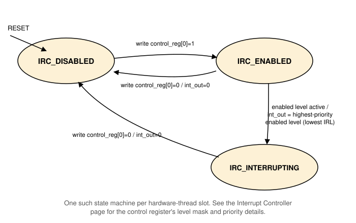

Interrupt Controller¶
A single, shared Interrupt Controller (IRC) routes the system's interrupt sources to the hardware threads of every core. It is AJIT's multi-thread interrupt controller. It has two parts:
- one slot per hardware thread, each with its own control
register, its own state, and its own
interrupt_leveloutput to that thread; - an inter-processor interrupt (IPI) block, which lets any thread interrupt any other (or itself).
All its registers are accessed with word loads and stores. See Peripheral Devices for the connection diagram and the full address map.
Interrupt sources¶
| Source | IRL | Reaches |
|---|---|---|
| Timer | 10 | every slot (each slot's mask decides) |
| IPI | 11 | the destination slot only |
| Serial Device | 12 | every slot (each slot's mask decides) |
External (env_int_in) |
14 | every slot (each slot's mask decides) |
The external input is for a source outside this device set, such as an
accelerator. In sparc_apara the APARA engine drives it, to signal that
an engine thread or a DMA transfer has finished (see The Engine in a
System). In the other configurations
nothing drives it, and it stays 0.
Slots¶
There are 8 slots, enough for 4 cores with 2 hardware threads each. The
slot for core c, thread t is number 2c + t, and its control
register is at 0xFFFF3000 + 4*(2c + t). A program finds its own core
and thread with rd %asr29, which reads (core << 8) | thread (in C,
ajit_get_core_and_thread_id()). The single-core configurations here
are core 0, thread 0, so they use slot 0 at 0xFFFF3000.
Control register¶
| Bits | Field | Access | Description |
|---|---|---|---|
[0] |
Enable | read/write | 1 enables this slot. Writing 0 disables it and drops its interrupt_level. |
[15:1] |
Level mask | read/write | Bit i set: interrupt level i is delivered to this thread. |
[30:16] |
Active sources | read only | Bit 15+i is 1 while a source at level i is active, whether or not it is masked. |
[31] |
Interrupting | read only | 1 while the slot is in IRC_INTERRUPTING. |
The mask bit positions equal each source's level, so masking a source is a bitwise AND. Writes to the read-only bits are ignored. The active sources field lets software see a source that is pending but masked, and is readable even while the slot is disabled.
Priority¶
When more than one enabled level is active at once, the lowest level number wins: Timer (10) > IPI (11) > Serial (12) > External (14).
Behavior¶
Each slot runs its own state machine:
IRC_DISABLED
The reset state.interrupt_levelis 0. A write that sets the enable bit moves toIRC_ENABLED.IRC_ENABLED
Watches the sources. As soon as any level enabled in the mask is active,interrupt_levelis set to that level (the highest-priority one, if more than one), and the slot moves toIRC_INTERRUPTING.IRC_INTERRUPTING
interrupt_levelstays asserted, even if the source goes away, until software clears the enable bit.
A write that clears the enable bit, from any state, immediately drops
interrupt_level and moves to IRC_DISABLED. A write that sets the
enable bit while already enabled or interrupting only updates the mask.

Handling an interrupt¶
The usual sequence, which AJIT's own bare-metal routines follow (and
which compiler/include/ajit_mt_irc.h implements, see C
Programs):
- The interrupt trap for level
Lis taken. - The handler disables its own slot, which drops
interrupt_level. - It clears the source (for example, disables the timer, or reads the Serial device's Rx register).
- It enables its slot again. If another enabled source is still active, the slot delivers it next.
Inter-processor interrupts (IPI)¶
The IPI block is 19 words at 0xFFFF3080:
| Offset | Register | Description |
|---|---|---|
0x00 |
IPI mask | Bit s: IPIs to slot s are enabled. |
0x04 |
IPI value | Bit s: an IPI is pending for slot s. |
0x08 to 0x47 |
Messages | 8 bytes per destination slot (slot s at 0x08 + 8s), for software. |
0x48 |
Lock | A word for software to use as a lock. |
Slot s sees an IPI (level 11) while bit s is set in both the mask
and the value. To interrupt another thread, a thread writes a message
for it, then sets its bit in the value register (and in the mask, if
not already set). The interrupted thread reads its message and clears
its value bit. Locking around these steps, with the lock word or
otherwise, is up to software, exactly as in AJIT. The routines in
compiler/include/ajit_ipi.h (__ajit_set_ipi_interrupt__() and
friends) do the register work.